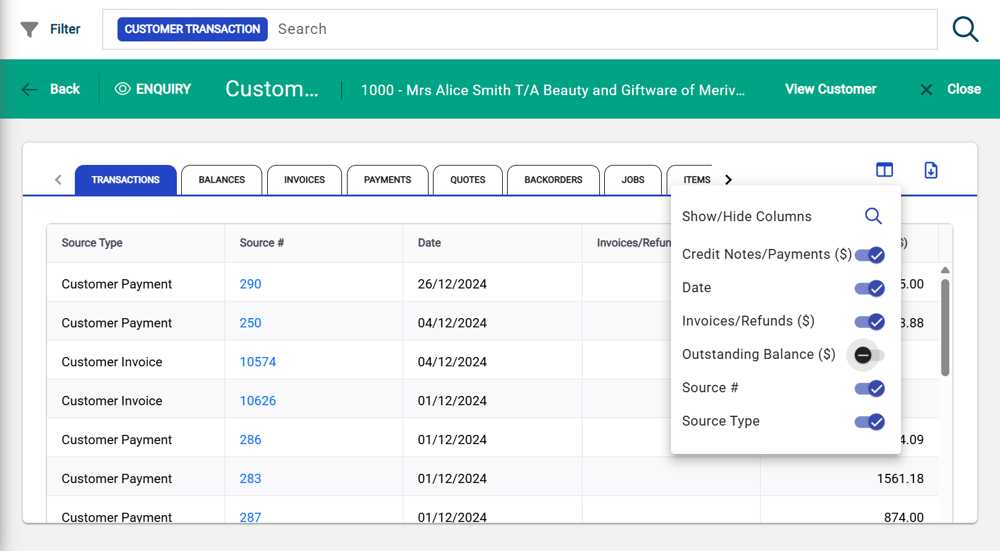

Enhance User Experience in Infusion Online using AG Grid
Infusion Online is a cloud-based enterprise business management platform developed by NetValue Ltd, covering accounting, inventory, sales, purchasing, and job management. The absence of a standardised table component architecture had resulted in inconsistent behaviour, duplicated configuration logic, poor performance, and a fragmented user experience across the application. The project involved finalising the AG Grid foundation architecture, applying Smart Grid features to system entities, designing a server-side view state persistence mechanism, and producing technical documentation for Smart Grid migration patterns and best practices. Key outcomes included a fully functional AG Grid foundation with column sorting, row selection abstraction, column visibility control, CSV export, and infinite scrolling with lazy loading; a PostgreSQL JSONB-based backend mechanism to persist table view state; AG Grid-to-Elasticsearch filter expression conversion; and contributions to the modernisation of the Infusion Component Library (ICL).
More Details